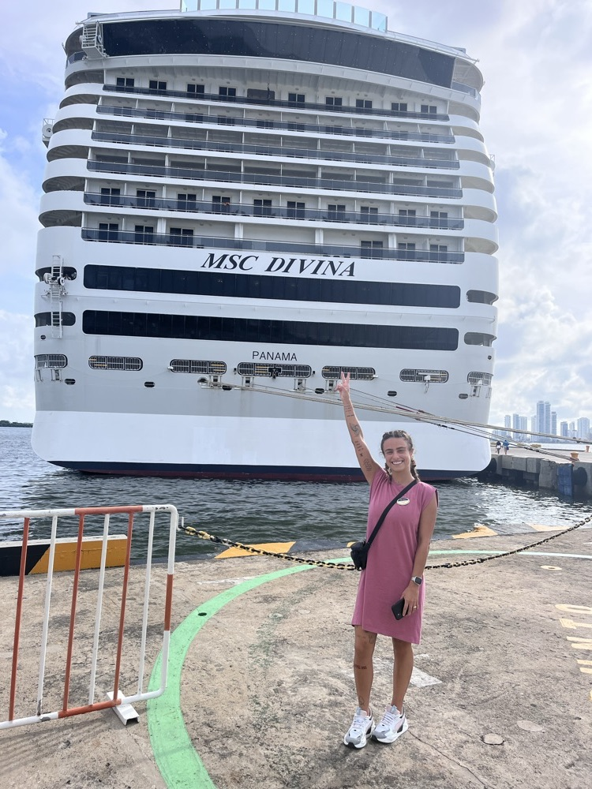
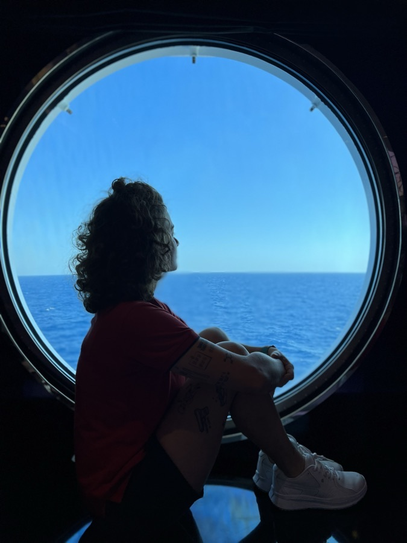
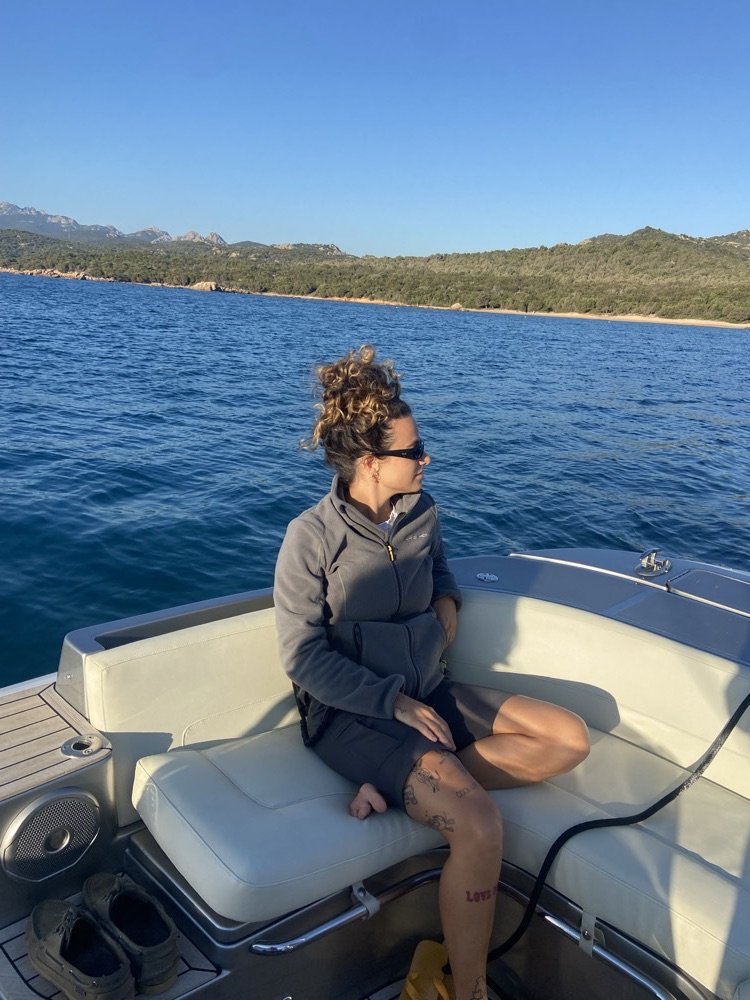
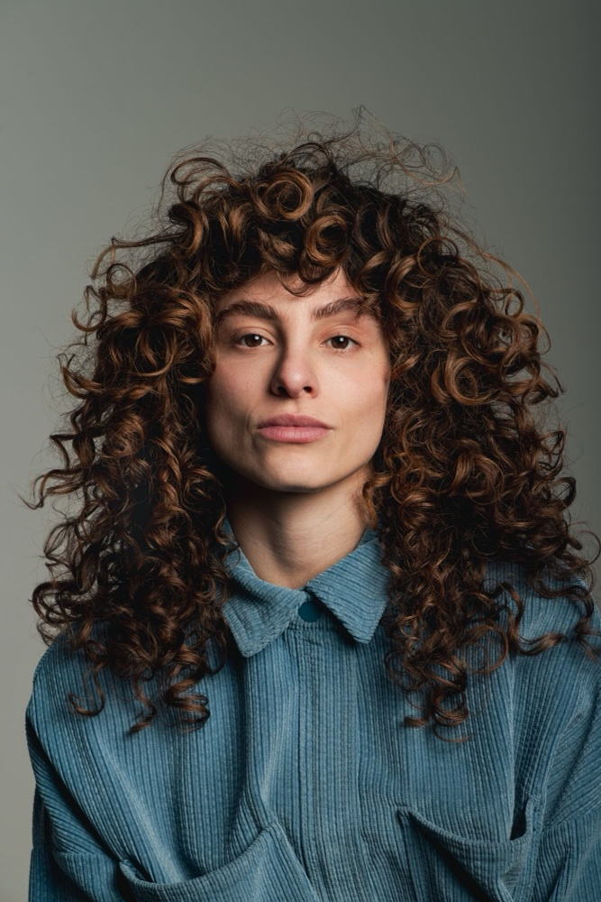

Sonha em trabalhar viajando pelo mundo
Quer transformar a paixão por viagens em uma carreira.
Do primeiro passo ao embarque: informação, estratégia e uma comunidade de pessoas que estão vivendo ou já viveram esse caminho.
 Bárbara Kulaif
Bárbara Kulaif
São 6 anos como cruise staff na MSC Cruzeiros e 4 anos a bordo de Yachts de Luxo. Bárbara começou como Junior Stewardess, chegou a Chief Stewardess e participou da temporada 12 do Below Deck.
Quando decidiu migrar para os Yachts, ela levou quase oito meses para conseguir a primeira vaga, porque não encontrava informação em português nem alguém que a orientasse. A mentoria nasceu para que você não passe por isso: mostramos o caminho com clareza e acompanhamos você em cada etapa.
Bárbara começou mal falando inglês. Cada etapa desse caminho virou aprendizado, e é isso que ela compartilha na mentoria.

6 anosEla entrou nos cruzeiros quase sem falar inglês. Trabalhando no entretenimento adulto, aprendeu inglês, espanhol e italiano, e encarou uma rotina puxada, de muitas horas em pé, que a preparou para qualquer desafio a bordo.

Quase oito mesesUm dia, assistindo a um programa sobre a vida a bordo, ela decidiu que queria trabalhar em Yachts de Luxo. Levou quase oito meses para conseguir a primeira vaga: não havia informação em português nem alguém para orientá-la.

La Spezia, ItáliaFinalmente veio a vaga tão sonhada: Junior Stewardess em um Yacht em La Spezia, onde ficou mais de um ano e aprendeu muito.

HojeSão 4 anos a bordo de Yachts. Com experiência como Chief Stewardess, ela segue trabalhando a bordo e, com a mentoria, ajuda outras pessoas a trilhar esse caminho de um jeito mais rápido e objetivo.
“Salário de R$ 55 mil e destinos de bilionários: a rotina da brasileira que trabalha em iates de luxo internacionais”
Ler matéria → UOL · Nossa Junho de 2025“Brasileira larga cruzeiros para ser ‘faz tudo’ em iates de luxo pelo mundo”
Ler matéria → Mulheres e a Cidade Entrevista“A história de quem fez do mundo sua casa”
Ler matéria →Quer transformar a paixão por viagens em uma carreira.
Quer viver experiências únicas e criar memórias inesquecíveis.
Deseja ter uma renda em dólar ou euro trabalhando no que ama.
A bordo, moradia e alimentação são por conta do Yacht.
Está começando do zero, mas tem vontade de aprender.
E quer fazer a transição para a indústria dos Yachts.
Nos dois formatos, a sessão é online e dura 1h30. O conteúdo é o mesmo; o que muda é o jeito de viver a mentoria.
Uma sessão exclusiva, no dia e horário que funcionarem melhor para você.
Além de tirar todas as dúvidas, analisamos o seu perfil, suas experiências e objetivos para criar uma estratégia personalizada para a sua entrada nos Yachts.
Um encontro com bastante espaço para perguntas e troca de experiências entre os participantes.
É uma ótima oportunidade para aprender também com as dúvidas e os processos de quem está entrando no mercado junto com você. As vagas por turma são limitadas.

Ao entrar na mentoria, você passa a fazer parte do grupo exclusivo de mentorados Vida a Bordo de Yachts, com orientação desde o primeiro passo até o embarque.
Um dia da semana só para perguntas e troca de informações.
Para tirar dúvidas, conversar sobre os processos e compartilhar experiências.
Compartilhe suas atualizações no grupo e receba orientação sobre cada passo.
Um guia para usar durante toda a sua jornada até o embarque.
Quem entra na mentoria tem condições especiais com os nossos parceiros para cuidar da documentação e dos preparativos para embarcar.
Chame no WhatsApp. Explicamos como funciona, tiramos suas dúvidas e ajudamos você a escolher entre a mentoria Individual e em Grupo.
Você preenche a inscrição e aceita o contrato ali mesmo, sem precisar assinar nem devolver nada. Depois, faz o pagamento por Pix ou cartão.
Na Individual, você escolhe o dia e o horário da sessão. No Grupo, recebe as datas pelo WhatsApp. E já entra no grupo exclusivo de mentorados.
Não. A mentoria foi pensada para quem está começando do zero e também para quem já trabalhou em cruzeiros e quer migrar para os Yachts.
Sim. A bordo, o inglês faz parte da rotina com os hóspedes e com a tripulação, então o ideal é conversar com segurança. Se o seu inglês ainda está em desenvolvimento, a mentoria ajuda você a planejar essa preparação junto com os outros passos.
Não. A mentoria é orientativa: mostramos o caminho, montamos a estratégia com você e acompanhamos cada etapa, mas a contratação depende de cada processo seletivo.
As sessões são online, pelo Google Meet, e duram 1h30. Na Individual, é só você e a Bárbara; no Grupo, são até 5 pessoas por turma.
Você entra no grupo exclusivo de mentorados, com o grupo aberto para dúvidas toda segunda-feira e encontros pelo Google Meet duas vezes por mês. Ao final, recebe um checklist completo em PDF.
Fale com a gente no WhatsApp: explicamos os valores de cada formato e as formas de pagamento, por Pix ou cartão de crédito.
Fale com a gente no WhatsApp: explicamos os detalhes, tiramos suas dúvidas e ajudamos você a escolher o melhor formato.
Fale com a gente no WhatsApp